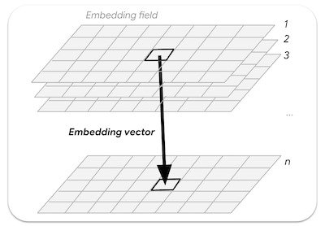
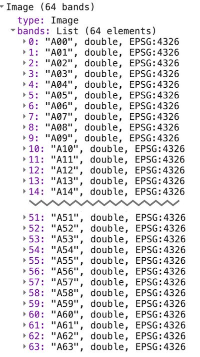
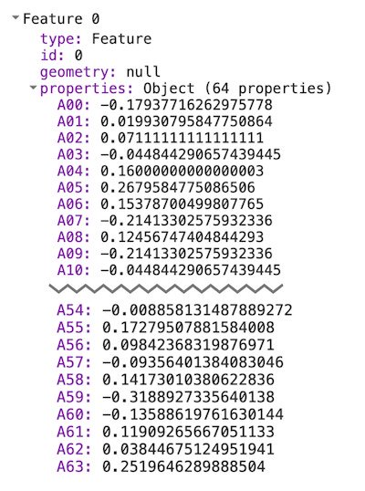
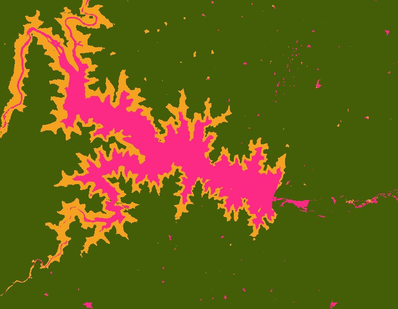
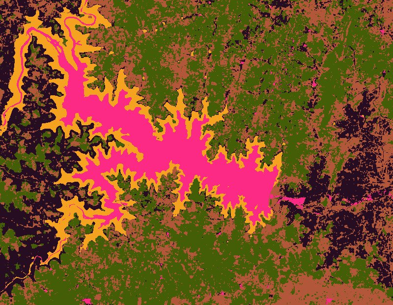
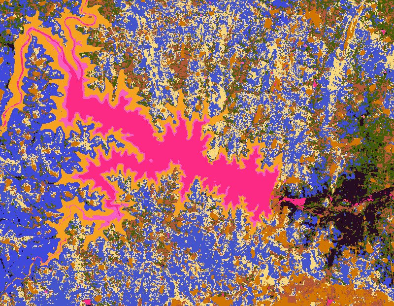

7. Tutorial GEE: Introduction to the Satellite Embedding Dataset#
Este tutorial forma parte de una serie de tutoriales sobre el conjunto de datos de embedding satelital. Consulte también Clasificación no supervisada, Clasificación supervisada, Regresión y Búsqueda por similitud.
AlphaEarth Foundations de Google es un modelo de incrustación geoespacial entrenado con diversos conjuntos de datos de observación de la Tierra (EO). El modelo se ha ejecutado con series temporales anuales de imágenes y las incrustaciones resultantes están disponibles como un conjunto de datos listo para su análisis en Earth Engine. Este conjunto de datos permite a los usuarios crear cualquier cantidad de aplicaciones de ajuste u otras tareas sin ejecutar modelos de aprendizaje profundo de alto coste computacional. El resultado es un conjunto de datos de propósito general que puede utilizarse para diversas tareas posteriores, como:
Clasificación
Regresión
Detección de cambios
Búsqueda por similitud
En este tutorial, comprenderemos cómo funcionan las incrustaciones y aprenderemos a acceder y visualizar el conjunto de datos de incrustación satelital.
7.1. Comprendiendo los embeddings#
Las incrustaciones son una forma de comprimir grandes cantidades de información en un conjunto más pequeño de características que representan una semántica significativa. El modelo AlphaEarth Foundations toma series temporales de imágenes de sensores como Sentinel-2, Sentinel-1 y Landsat y aprende a representar de forma única la información mutua entre fuentes y objetivos con tan solo 64 números (más información en el artículo). El flujo de datos de entrada contiene miles de bandas de imágenes de múltiples sensores y el modelo toma esta entrada de alta dimensión y la convierte en una representación de menor dimensión.
Un buen modelo mental para comprender el funcionamiento de AlphaEarth Foundations es una técnica denominada Análisis de Componentes Principales (PCA). El PCA también ayuda a reducir la dimensionalidad de los datos para aplicaciones de aprendizaje automático. Mientras que el PCA es una técnica estadística que permite comprimir decenas de bandas de entrada en unos pocos componentes principales, AlphaEarth Foundations es un modelo de aprendizaje profundo que puede tomar miles de dimensiones de entrada de conjuntos de datos de series temporales multisensor y aprende a crear una representación de 64 bandas que captura de forma única la variabilidad espacial y temporal de ese píxel.
Un campo de embedding es la matriz continua o “campo” de embeddings aprendidas. Las imágenes de las colecciones de campos de embedding representan trayectorias espacio-temporales que abarcan un año completo y tienen 64 bandas (una para cada dimensión de incrustación).
{kind=link}

Fig. 7.1 vector de incrustación n-dimensional muestreado de un campo de incrustación embedding#
7.2. Acceso al conjunto de datos de incrustación de satélites#
El conjunto de datos de incrustación de satélites es una colección de imágenes anuales desde 2017 en adelante (p. ej., 2017, 2018, 2019, etc.). Cada imagen tiene 64 bandas, donde cada píxel es el vector de incrustación que representa la serie temporal multisensor para el año en cuestión.
var embeddings = ee.ImageCollection('GOOGLE/SATELLITE_EMBEDDING/V1/ANNUAL');
7.3. Seleccionar una región#
Comencemos por definir una región de interés. En este tutorial, seleccionaremos una región alrededor del embalse Krishna Raja Sagara (KRS) en India y definiremos un polígono como variable geométrica. También puede usar las Herramientas de Dibujo del Editor de Código para dibujar un polígono alrededor de la región de interés, que se guardará como variable geométrica en las Importaciones.
// Use the satellite basemap
Map.setOptions('SATELLITE');
var geometry = ee.Geometry.Polygon([[
[76.3978, 12.5521],
[76.3978, 12.3550],
[76.6519, 12.3550],
[76.6519, 12.5521]
]]);
Map.centerObject(geometry, 12);
7.4. Preparar el conjunto de datos de incrustación satelital#
Las imágenes de cada año se dividen en mosaicos para facilitar el acceso. Aplicamos filtros y buscamos las imágenes del año y la región seleccionados.
var year = 2024;
var startDate = ee.Date.fromYMD(year, 1, 1);
var endDate = startDate.advance(1, 'year');
var filteredEmbeddings = embeddings
.filter(ee.Filter.date(startDate, endDate))
.filter(ee.Filter.bounds(geometry));
Las imágenes de embedding satelital se cuadriculan en mosaicos de hasta 163.840 m x 163.840 m cada uno y se muestran en la proyección de las zonas UTM del mosaico. Como resultado, se obtienen múltiples mosaicos de incrustación satelital que cubren la región de interés. Podemos usar la función mosaic() para combinar varios mosaicos en una sola imagen. Imprimamos la imagen resultante para ver las bandas.
Tip: Al usar mosaic() se pierde la proyección UTM original y la imagen resultante se establece en una proyección predeterminada, que es WGS84 con una escala de 1 grado. Esto funciona bien en la mayoría de los casos, y puede especificar la escala y la proyección adecuadas para su región al muestrear datos o exportar los resultados. Por ejemplo, si especifica el CRS como EPSG:3857 y la escala como 10 m, Earth Engine reproyectará todas las entradas a esa proyección y garantizará que la operación se realice en ella. Sin embargo, en algunos casos, especialmente para análisis a escala global, donde no existe una proyección ideal y no desea píxeles en un CRS geográfico, puede ser más efectivo aprovechar la estructura de mosaico integrada mediante map() en la colección. Este enfoque conserva la proyección UTM original de cada mosaico y puede producir resultados más precisos.
var embeddingsImage = filteredEmbeddings.mosaic();
print('Satellite Embedding Image', embeddingsImage);
Verá que la imagen tiene 64 bandas, denominadas A00, A01, …, A63. Cada banda contiene el valor del vector de incrustación para el año dado en esa dimensión o eje. A diferencia de las bandas espectrales o índices, las bandas individuales no tienen un significado independiente; cada banda representa un eje del espacio de incrustación. Utilizaría las 64 bandas como datos de entrada para sus aplicaciones posteriores.
{kind=link}

Fig. 7.2 64 bands de la imagen satelital embedding#
7.5. Visualizar el conjunto de datos de incrustación satelital#
Como acabamos de ver, nuestra imagen contiene 64 bandas. No es fácil visualizar toda la información contenida en cada banda, ya que solo podemos ver una combinación de tres bandas a la vez.
Podemos seleccionar tres bandas cualesquiera para visualizar tres ejes del espacio de incrustación como una imagen RGB.
var visParams = {min: -0.3, max: 0.3, bands: ['A01', 'A16', 'A09']};
Map.addLayer(embeddingsImage.clip(geometry), visParams, 'Embeddings Image');
Una forma alternativa de visualizar esta información es agrupar píxeles con incrustaciones similares y usar estas agrupaciones para comprender cómo el modelo ha aprendido la variabilidad espacial y temporal de un paisaje.
Podemos utilizar técnicas de agrupamiento no supervisado para agrupar los píxeles en un espacio de 64 dimensiones en grupos o “clústeres” de valores similares. Para ello, primero muestreamos algunos valores de píxeles y entrenamos un ee.Clusterer.
var nSamples = 1000;
var training = embeddingsImage.sample({
region: geometry,
scale: 10,
numPixels: nSamples,
seed: 100
});
print(training.first());
Si imprime los valores de la primera muestra, verá que tiene 64 valores de banda que definen el vector de incrustación de ese píxel. El vector de incrustación está diseñado para tener una longitud unitaria (es decir, la longitud del vector desde el origen (0,0,….0) hasta los valores del vector será 1).
{kind=link}

Fig. 7.3 Figure: Extracted embedding vector#
Ahora podemos entrenar un modelo no supervisado para agrupar las muestras en el número deseado de clústeres. Cada clúster representaría píxeles con embeddings similares.
// Function to train a model for desired number of clusters
var getClusters = function(nClusters) {
var clusterer = ee.Clusterer.wekaKMeans({nClusters: nClusters})
.train(training);
// Cluster the image
var clustered = embeddingsImage.cluster(clusterer);
return clustered;
};
Ahora podemos agrupar la imagen de incrustación más grande para ver grupos de píxeles con incrustaciones similares. Antes de hacerlo, es importante comprender que el modelo ha capturado la trayectoria temporal completa de cada píxel durante el año; esto significa que si dos píxeles tienen valores espectrales similares en todas las imágenes, pero en momentos diferentes, pueden separarse.
A continuación, se muestra una visualización de nuestra área de interés, capturada por imágenes de Sentinel-2 con máscara de nubes para el año 2024. Recuerde que todas las imágenes (junto con las de Sentinel-2, Landsat 8/9 y muchos otros sensores) se han utilizado para determinar las incrustaciones finales.
Visualicemos las imágenes de incrustación de satélite segmentando el paisaje en 3 grupos.
var cluster3 = getClusters(3);
Map.addLayer(cluster3.randomVisualizer().clip(geometry), {}, '3 clusters');
{kind=link}

Fig. 7.4 Figure: Satellite Embedding image with 3 clusters#
Observará que los clústeres resultantes tienen límites muy precisos. Esto se debe a que las incrustaciones incluyen inherentemente un contexto espacial: se esperaría que los píxeles dentro del mismo objeto tuvieran vectores de incrustación relativamente similares. Además, uno de los clústeres incluye áreas con agua estacional alrededor del embalse principal. Esto se debe al contexto temporal capturado en el vector de incrustación, que nos permite detectar dichos píxeles con patrones temporales similares.
Veamos si podemos refinar aún más los clústeres agrupándolos en cinco.
var cluster5 = getClusters(5);
Map.addLayer(cluster5.randomVisualizer().clip(geometry), {}, '5 clusters');
{kind=link}

Fig. 7.5 Figure: Satellite Embedding image with 5 clusters#
Podemos seguir refinando las imágenes en grupos más especializados aumentando el número de grupos. Así se ve la imagen con 10 grupos.
var cluster5 = getClusters(5);
Map.addLayer(cluster5.randomVisualizer().clip(geometry), {}, '5 clusters');
{kind=link}

Fig. 7.6 Figure: Satellite Embedding image with 10 clusters#
Se están revelando muchos detalles y podemos ver diferentes tipos de cultivos agrupados en diferentes grupos. Dado que la Integración Satelital captura la fenología del cultivo junto con las variables climáticas, es ideal para el mapeo de tipos de cultivos. En el siguiente tutorial (Clasificación No Supervisada), veremos cómo crear un mapa de tipos de cultivos con datos de Integración Satelital con pocas o ninguna etiqueta a nivel de campo.